Government of Tamil Nadu
First Edition - 2018
Revised Edition - 2019, 2022
(Published under New Syllabus in Trimester Pattern)
Not for sale
Content Creation
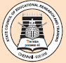
State Council of Educational Research and Training © SCERT 2018
Printing & Publishing
TamilNadu textbook and Educational services corporation
(
STANDARD SIX
TERM - III
VOLUME – 3
Unit |
Titles |
Page Number |
Month |
|
|||
Page Number 87 |
Month : January |
||
Page Number 100 |
Month : February |
||
Page Number 112 |
Month : February March |
||
Page Number 128 |
Month : March April |
||
Page Number 143 |
Month : January |
||
Page Number 171 |
Month : February |
||
Page Number 188 |
Month : March |
||
Page Number 195 |
Month : January |
||
Page Number 203 |
Month : February |
||
Page Number 212 |
Month : March |
||
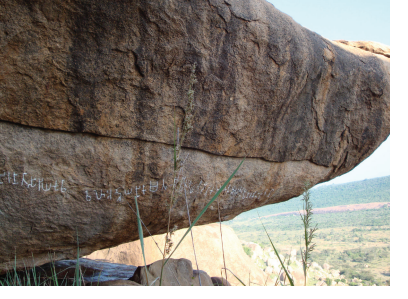
To understand that Sangam Tamil literature is the main source for the study of ancient Tamil society
To know the rule of Muvendars Within Bracket Three Great Kings the Chera, Chola and the Pandya kings and their contemporary minor chieftains
To gain an understanding of the administrative system and the socio-economic conditions of Tamilagam
To learn about the Kalabhra period
The word ‘Sangam’ refers to the association of poets who flourished under the royal patronage of the Pandya kings at Madurai. The poems composed by these poets are collectively known as Sangam literature. The period in which these poems were composed is called the Sangam Age.
Box Item
ArumugaNavalar With in Bracket born in Jaffna, U.V.Swaminatha Iyer and Damodharam Pillai Within Bracket born inJaffna strove hard and spent many years in retrieving and publishing the Tamil classics and the ancient Tamil texts, which were originally present as palm leaf manuscripts.
SourcesInscriptions |
Hathigumpha Inscription of King Karavela of Kalinga, Pugalur With in Bracket near Karur Inscription, Ashokan Edicts 2 and 8, and inscriptions found at Mangulam, Alagarmalai and Keelavalavu Within Bracket all near Madurai |
SourcesCopper Plates |
Velvikudi and Chinnamanur copper plates |
SourcesCoins |
Issued by the Cheras, Cholas, Pandyas and the chieftains of Sangam Age as well as the Roman coins |
SourcesMegalithic Monuments |
Burials and Hero stones |
SourcesExcavated Materials From |
Adichanallur, Arikamedu, Kodumanal, Puhar, Korkai, Alagankulam, Uraiyur |
SourcesLiterary Sources |
Tholkappiyam, Ettuthogai With in Bracket eight anthologiel, Pathupattu Within Bracket ten idylls, Pathinen Keel kanakku Within Bracket a collection of eighteen poetic works, Pattinapalai and Maduraikanji. Epics Silapathikaram and Manimegalai |
SourcesForeign Notices |
The Periplus of the Erythrean Sea, Pliny’s Natural History, Ptolemy’s Geography, Megasthenes’s Indica, Rajavali, Mahavamsa and Dipavamsa |
BOX ITEM
Tolkappiyam Is a work on Tamil grammar. It represents the quality of Tamil language and the culture of Tamil people of the Sangam Age.
Time Span |
third century Before Christ Within Before Common Era to third century Anno Domini Within Bracket Common Era
|
Tamizhagam |
Vengadam Within Bracket Tirupathi hill in the north to Kanyakumari With in Bracket Cape Comorin in the south, Bounded by sea on the east and the west. |
Age |
Iron Age |
Culture |
Megalithic |
Polity |
Monarchy |
Dynasties ruled |
The Cheras, the Cholas and the Pandyas |
Box Item
George L. Hart, Professor of Tamil language at the University of California, has said that Tamil is as old as Latin. The language arose as an entirely independent tradition with no influence of other languages.
Within Bracket Three Great Kings ruled the territories of Tamilagam during the Sangam Age. The Tamil word ‘Vendar’ was used to refer to three dynasties, namely the Cheras, Cholas and Pandyas. The Cheras ruled over the central and north Travancore, Cochin, south Malabar and Kongu region of Tamil Nadu. The Pathitrupathu Within Bracket a collection of ten decades of verses provides information about the Chera kings. It is known that the Chera king Senguttuvan went on a military expedition to North India. He brought stones from the Himalayas to make the idol of Kannagi, an epic character from Silapathikaram. He introduced the pattini cult. Cheran Senguttuvan’s younger brother was Ilango Adigal. He was the author of Silappathikaram. Another Chera king, Cheral Irumporai, issued coins in his name. Some Chera coins bear their emblem of bow and arrow.
BOX ITEM
Prominent Chera Rulers
Udayan Cheralathan
Imayavaramban Netun Cheralathan
Cheran Senguttuvan
Cheral Irumporai
The Chola kingdom of Sangam period extended upto Venkatam Within Bracket Tirupaths hills. The Kaveri delta region remained the central part of the kingdom. This area was later known as Cholamandalam. Karikal Valavan or Karikalan was the most famous of the Chola kings. He defeated the combined army of the Cheras, Pandyas and the eleven Velir chieftains who supported them at Venni, a small village in the Thanjavur region. He converted forests into cultivable lands. He built Kallanai Within Bracket meaning a dam made of stone across the river Kaveri to develop agriculture. Their port Puhar attracted merchants from various regions of the Indian Ocean. The Pattinapaalai, a poetic work in the Pathinen Keel Kanakku, gives elaborate information of the trading activity during the rule of Karikalan.
Box Item
It was a dyke, built with stones. It was constructed across the Cauvery to divert water throughout the delta region for irrigation. When it was built, kallanai irrigated an area of about 69000 acres.
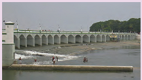
Ilanchetsenni
KarikalValavan
Kocengannan
KilliValavan
Perunarkilli
The Pandyas ruled the present day southern Tamil Nadu. The Pandya kings patronized the Tamil poets and scholars. Several names of Pandya kings are mentioned in the Sangam literature. Neduncheliyan is hailed as the most popular warrior. He defeated the combined army of the Chera, Chola and five Velir Chieftains at Talayalanganam. He is praised as the lord of Korkai.
Pandya country was well known for pearl hunting. Pandya kings issued many coins. Their coins have elephants on one side and fish on another side. MudukudimiPeruvaluthi issued coins to commemorate his performance of many Vedic rituals
BOX ITEM
Prominent Pandya Rulers
Nediyon
Nanmaran
MudukudumiPeruvaluthi
Neduncheliyan
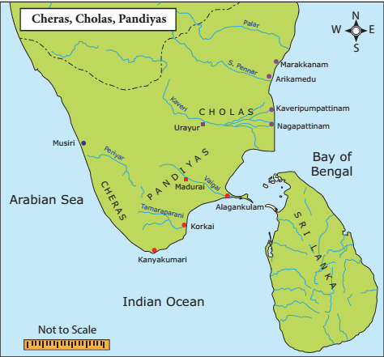
The Titles Assumed by the Muvendars
Cheras
Adhavan
Kuttuvan
Vanavan
Irumporai
Cholas
Senni
Semibiyan
Killi
Valavan
Pandiyas
Maran
Valuthi
Seliyan
Tennar
Royal Insignia
Sceptre , drum Within Bracket murasu and white umbrella Within Bracket venkudai were used as the symbols of royal authority.
Muvendar |
Garland |
Port |
Capital |
Symbols |
Cheras |
Garland : Palmyra Flower |
Port : Muziri or Tondi |
Capital: Vanchi allies Karur |
Symbols: Bow and Arrow |
Cholas |
Garland : Fig Within Bracket Aththi flower |
Port : Puhar |
Capital : Uraiyur allies Puhar |
Symbols: Tiger |
Pandyas |
Garland: Margosa Within Bracket Neem Flower . |
Port : Korkai |
Capital : Madurai |
Symbols: Two Fish |
Apart from three great kings, there were several brave independent minor chieftains called velirs. The name ‘Ay’ is derived from the ancient Tamil word ‘Aaayarr’ Within Bracket meaning shepherd. Among the chiefs of the Sangam Age, Anthiran, Titiran and Nannan were the important names.
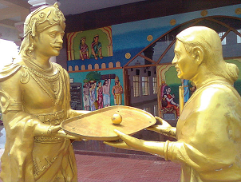
The famous Velirs were the seven patronsWithin Bracket Kadai ezhu Vallalgal. They were Pari, Kari, Ori, Pegan, Ay, Adiyaman and Nalli. They were popular for their generous patronage of Tamil poets.
Kilar was the village chief.
The kingship was hereditary. The king was called ko. It is the shortened form of Kon. Vendan, Kon, Mannan, Kotravan and Iraivan were the other titles by which the king was addressed. The eldest son of the reigning king generally succeeded to the throne. The coronation ceremony was known as arasukattilerudhal or mudisoottuvila. The crown prince was known as komahan, while the young ones were known as Ilango, Ilancheliyan and Ilanjeral. King held a daily durbar Within Bracket naalavai at which he heard and resolved all the disputes. The income to the state was through taxation. Land tax was the main source of revenue and it was called ‘Irai’. This apart, the state collected tolls and customs Within Bracket sungam, tributes and fines.
The kings and soldiers wore the heroic anklet Within Bracket Veera kal. On the anklet, the name and achievement of the wearer were blazoned. Spies were used not only to find out what was happening within the country, but also in foreign countries.
A wound in the back was considered a disgrace and there are instances of kings fasting unto death because they had suffered such a wound in the battle.
The king’s court was called Arasavai. The king occupied a ceremonious throne in the court called Ariyanai. In the court, the king was surrounded by officials, distinguished visitors and court poets. The rulers had five-fold duties. They were encouraging learning, performing rituals, presenting gifts, protecting people and punishing the criminals. Ambassadors were employed by the kings. They played a significant role. The king was assisted by a number of officials. They were divided into Aimperungulu Within Bracket five-member committee and Enberaayam Within Bracket eight-member group.
The king’s army consisted of four divisions, namely, infantry, cavalry, elephants and chariot force. The army was known as ‘Padai’. The chief of the army was known as Thanaithalaivan. The prominent weapons used during this period were sword, kedayam Within Bracket shield, tomaram Within Bracket lance, spears, bows and arrows. Tomaram is mentioned as a missile to be thrown at the enemy from a distance. The place where the weapons were kept was known as paddaikottil. The forts were protected by deep moats and trenches. The war drum was worshipped as a deity.
The king was the final authority for appeal. In the capital town, the court of justice was called Avai. In the villages, Mandram Served as the place for dispensing justice. Punishment was always severe. Execution was ordered for theft cases. The punishment awarded for other crimes included beheading, mutilation of the offending limbs of the body, torture and imprisonment and imposition of fines.
The entire kingdom was called Mandalam. Mandalam was divided into Nadus. Kurram was a subdivision of Nadu. The Ur was a village, classified into perur Within Bracket big village, Sirur WithinBracket a small village and Mudur Within Bracket an old village depending upon its population, size and antiquity. Pattinam was the name for a coastal town and Puhar was the general term for harbour town.
Puhar, Uraiyur, Korkai, Madurai, Muziri, Vanji or Karur and Kanchi.
The landform was divided into five thinais Within Bracket ecoregions.
Eco region Within Bracket thinai |
Landscape |
Occupation |
People |
Deity |
Kurinji thinai |
Landscape: Hilly region |
Occupation : Hunting or gathering |
People: Kuravar or Kuratiyar |
Deity: Murugan |
Mullai thinai |
Landscape: Forest region |
Occupation: Herding |
People: Aayarr or atchiyar |
Deity: Maayon |
Marutham thinai |
Landscape: Riverine track Within Bracket plains |
Occupation: Agriculture |
People: Ulavar or Ulatiyar |
Deity: Indiran |
Neithal thinai |
Landscape: Coastal region |
Occupation: Fishing or salt making |
People: Parathavar or Nulaithiyar |
Deity: Varunan |
Palai thinai |
Landscape: Parched Land |
Occupation ; Heroic deeds |
People: Maravar or Marathiyar |
Deity: Kotravai |
Land was classified according to its fertility. Marutham was called menpulam Within Bracket fertile land. It produced paddy and sugarcane. The rest of the landscape, excluding Neithal, was called vanpulam Within Bracket hard land, and it produced pulses and dry grains.
There was no restriction for women in social life. There were learned and wise women. Forty women poets had lived and left behind their valuable works. Marriage was a matter of self-choice. However, chastity Within Bracket karpuwas considered the highest virtue of women. Sons and daughters had equal shares in their parents’ property.
BOX ITEM
Women Poets of Sangam Age
Avvaiyar, Velli Veethiyar, Kakkaipadiniyar, Aathi Manthiyar, Pon Mudiyar
The primary deity of the Tamils was Seyon or Murugan. Other gods worshipped during the Sangam period were Sivan, Mayon allies Vishnu, Indiran, Varunan and Kotravai. The Hero stone otherwise called as natukkal worship was in practice. Buddhism and Jainism also co-existed
Box Item
Veerakkal or Natukkal
The ancient Tamils had a great respect for the heroes who died in the battlefield. The hero stones were erected to commemorate heroes who sacrificed their lives in war.
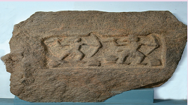
Caste did not develop in Tamilagam as it did in the northern India. Varuna system Within Bracket occupation- based castecame to the Dravidian south comparatively late.
The rich people wore muslin, silk and fine cotton garments. The common people wore two pieces of clothes made of cotton. The Sangam literature refers to clothes Within Bracket Kalingam, which were thinner than the skin of a snake. Women adorned their hair plaits with flowers. Both men and women wore a variety of ornaments. They were made of gold, silver, pearls, precious stones, conch shells and beads. The People were fond of using aromatic perfumes.
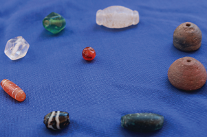
There are many references to a variety of musical instruments such as drum, flute and yal. Karikalan was a master of seven notes of music Within Bracket ElisaiVallavan. Singing bards were called panar and viraliyar. Dancing was performed by kanigaiyar. Koothu Within Bracket allies folk drama was the most important cultural practice of the people of Sangam Age. They developed the concept of MuthamilWithin Bracket Iyal, Isai, Naatakam.
The major occupations of the people were: agriculture, cattle rearing, fishing and hunting. Other craftsmen like carpenter, blacksmith, goldsmith, and potters were also part of the population. Weaving was the most common part-time occupation of the farmers and a regular full-time job for many others.
People celebrated several festivals. The harvest festival Within Bracket Pongal and the festival of spring, kaarthigai were some of them. Indira vila was celebrated in the capital. There were many amusements and games. This included dances, festivals, bull fights, cock fights, dice, hunting, wrestling and playing on swings. Children played with toy carts and with the sand houses made by them.
Trade existed at three levels: local, overland and overseas. The extensive and lucrative foreign trade that Tamilagam enjoyed during this period stands testimony to the fact that Tamils had been great seafarers. Warehouses for storing the goods were built along the coast. The chief ports had lighthouses, which were called KalangaraillanguSudar. Caravans’ merchants carried their merchandise to different places in oxen-driven carts. Barter system was prevalent.
Box Item
Malabar Black Pepper
When the Mummy of Ramses 2 of Egypt was uncovered, archaeologists found black peppercorns stuffed into his nostrils and in his abdomen Within Bracket as a part of embalming process practised in olden day.
There were two kinds of markets or bazaars in the leading cities like Puhar and Madurai. In Madurai they were Nalangadi Within Bracket the morning market and Allangadi Within Bracket the evening market. In these markets large varieties as well as large quantities of goods were sold and purchased.
Musiri, Tondi, Korkai
Salt, pepper, pearls, ivory, silk, spices, diamonds, saffron, precious stones, muslin, sandalwood
Topaz, tin, glass, horses
Box Item
Silk supplied by Indian merchants to the Roman Empire was considered so important that the Roman emperor Aurelian declared it to be worth its weight in gold.
Box Item
Muziris – First Emporium
The Roman writer Pliny the Elder writes of Muziris in his Natural History as the ‘fist emporium Within Bracket shopping complexof India’. A temple of Augustus was built at Muziris, which had a Roman colony.
A papyrus document Within Bracket now in Vienna Museum of second century Before Christ Within Bracket Before Common Era records the agreement between two merchants’ shippers of Alexandria and Muziris.
Archaeological excavations have confirmed the trading relations between the Tamilagam and the countries such as Greece, Rome, Egypt, China, South East Asia and Sri Lanka.
Towards the end of the Third century Anno DominiWithin Bracket Common Era, the Sangam period slowly went into a decline. Following the Sangam period, the Kalabhras had occupied the Tamil country for about two and half centuries. We have very little information about Kalabhras. They left neither artefacts nor monuments. But there is evidence of their rule in literary texts. The literary sources for this period include Tamil Navalar Charithai, Yapernkalam and Periapuranam. Seevaka Chinthamani and Kundalakesi were also written during this period. In Tamilagam, Jainism and Buddhism became prominent during this period. Introduction of Sanskrit and Prakrit languages had resulted in the development of a new script called Vatteluththu. Many works under Pathinen Keelkanakku were composed. Trade and commerce continued to flourish during this period. So, the Kalabhra period is not a dark age, as it is portrayed.
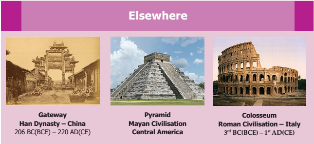
The word ‘Sangam’ refers to the association of poets who flourished under the royal patronage of the Pandya kings at Madurai.
Muvendars the Cheras, Cholas and the Pandyascontrolled the territories of Tamilagam during the Sangam Age.
Apart from three great monarchs, Tamil country was ruled by several independent minor chieftains.
Archaeological excavations have confirmed the trading relations between Tamilagam and many foreign countries.
Towards the end of the ThirdCentury Anno Domini Within Bracket Common Era, the Sangam period slowly started to decline. The Kalabhras occupied the Tamil country. Evidence of their rule isavailable in Jain andBuddhist literature
Strove tried hard கடும்முயற்சி
Dynasty a line of hereditary rulers ராஜவம்சம்
Commemorate to honour the memory of கௌரவிப்பதற்காக
Royal insignia symbols of power அரசசின்னம்
Patronage support given by a patron ஆதரவு
Blazoned displayed vividly வெளிக்காட்டுதல்
Acquitted released விடுதலை
Bards poets singing in praise of princesand brave men புலவர்கள்
Warehouses a large building for keeping goods சேமிப்புகிடங்கு
Portrayed described elaborately சித்தரிக்கப்பட்டுள்ளது
1.Choose the correct answer
1. Pattini cult in Tamil Nadu was introduced by Dash.
a) Pandian Nedunchelian
b) Cheran Senguttuvan
c) Ilango Adigal
d) Muda thiru maran
Answer: b) Cheran Senguttuvan
2. Which dynasty was not in power during the sangam Age Dash?
a) Pandyas
b) Cholas
c) Pallavas
d) Cheras
Answer: c) Pallavas
3. The rule of Pandyas was followed by Dash
a) Satavahanas
b) Cholas
c) Kalabhras
d) Pallavas
Answer: c) Kalabhras
4. The lowest unit of administration during the Sangam Age was dash
a) Mandalam
b) Nadu
c) Ur
d) Pattinam
Answer: c) Ur
5. What was the occupation of the inhabitants of the Kurinji region?
a) Plundering
b) Cattle rearing
c) Hunting and gathering
d) Agriculture
Answer: c) Hunting and gathering
2. Read the Statement and tick the appropriate answer
1. Assertion (A): The assembly of the poets was known as Sangam.
Reason (R): Tamil was the language of Sangam literature.
Option a) Both A and R are true. R is the correct explanation of A.
Optionb) Both A and R are true. R is not the correct explanation of A.
Optionc) A is true but R is false.
Optiond) Both A and R are not true.
Answer: a) Both A and R are true. R is the correct explanation of A.
2. Which of the following statements are not true?
Option a 1 only
Option b 1 and 3 only
Option c 2 only
Answer: Option b 1 and 3 only
3. The ascending order of the administrative division in the ancient Tamilagam was
Option a) Ur Less than Nadu Less than Kurram Less than Mandalam
Option b) Ur Less than Kurram Less than Nadu Less than Mandalam
Option c) Ur Less than Mandalam Less than Kurram Less than Nadu
Option d) Nadu Less than Kurram Less than Mandalam Less than Ur
Answer: b) Ur Less than Kurram Less than Nadu Less thanMandalam
4. Match the following dynasties with the Royal Insignia
A) Chera 1 Two Fish
B) Chola 2 Tiger
C) Pandya 3 Bow and arrow
a) 3 2 1
b) 1 2 3
c) 3 1 2
d) 2 1 3
Answer:
A) Chera Bow and arrow
B) Chola Tiger
C) Pandya Two Fish
3. Fill in the blanks
1. The battle of Venni was won by Dash
Answer: Karikal valavan
2. The earliest Tamil grammar work of the Sangam period was Dash
Answer: Tholkappiyam
3. Dash built Kallanai across the river Kaveri.
Answer: Karikalan
4. The chief of the army was known as Dash
Answer : Thanai thalaivan
5. Land revenue was called Dash
Answer: Irai
4. True or False
1. The singing bards of the Sangam age were called Irular
Answer: False
2. Caste system developed during the Sangam period.
Answer: False
3. Kilar was the village chief
Answer: True
4. Puhar was the general term for the city
Answer: False
5. Coastal region was called Marudham.
Answer: False
5.Match
a. Thennar Cheras
b. Vanavar Cholas
c. Senni Velir
d. Adiyaman Pandyas
Answer:
a. Thennar Pandyas
b. Vanavar Cheras
c. Senni Cholas
d. Adiyaman Velir
6 Answer in one or two sentences
1. Name any two literary sources to reconstruct the history of ancient Tamilagam.
2. What was Natukkal or Virakkal?
3. Name five thinais mentioned in the Sangam literature.
4. Name any two archaeological sites related to the Sangam period.
5. Name the seven patrons Within Bracket Kadaiyelu Vallalgal.
6. Name any three Tamil poetic works of Kalabhra period
7. Answer the following
1. Discuss the status of women in the Sangam Society.
8. Higher Order Thinking
1. Karikal Valavan is regarded as the greatest Chola king Justify
2. The period of Kalabhra is not a dark age Give reasons.
9. Map Work
1. Mark and colour the extent of Chera, Chola and Pandya empires on the river map of South India.
2. Mark the following places. Korkai, Kaveripoompattinam, Musiri, Uraiyur, Madurai
10. Life skill
1. Collect and paste the pictures of the landscape and find out the eco-region to which it belongs. Write the important crops grown and occupation of the people there.
11. Answer Grid
Mention two epics of the Sangam periods. Answer: Silapathikaram, Manimegalai |
Name the two groups of officials who assisted the King. Answer: Aimperunguzhu, Enperayam |
Name any two women poets of the Sangam Period. Answer:Awwaiyar,Velli Veethiyar
|
Name any three majors ports of Sangam age. Answer:Musiri, Tondi,Korkai |
What constituted Muthamizh? Answer:Iyal,Isai,Naatakam
|
Silapathikaram was written by Dash Answer: Ilango Adigal |
Talayalanganam is related to which Pandya king? Answer:Nedunchezhiyan |
Which ecoregion was called menpulam? Answer:Marutham |
The light houses in the ports are called Dash Answer: 1. Kalangarai 2.Flangu Sudar |
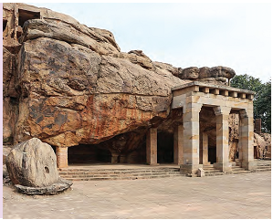
To acquire knowledge of the history of dynasties and kingdoms that emerged after the breakup of the Mauryan Empire.
To gain an understanding of the polity, society, economy, and culture of various kingdoms that were established in the south, north and north-west of India.
To become familiar with their contributions to early medieval India.
The break-up of the Mauryan Empire resulted in the invasions of Sakas, Scythians, Parthians, Indo-Greeks or Bactrian Greeks and Kushanas from the north-west. In the south, Satavahanas became independent after Asoka’s death. There were Sungas and Kanvas in the north before the emergence of the Gupta dynasty. Chedis declared their independence in Kalinga.
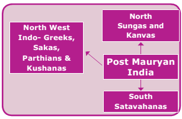
It has to be noted here that, though Magadha ceased to be the premier state of India, it continued to be a great centre of Buddhist culture.
Ayodhya Inscription of Dana Deva
Persepolis, Nakshi Rustam Inscriptions
Moga Within Bracket Taxila copper plate
Junagadh or Girnar Inscription
Nasik Eulogy
Inscription of Darius 1
Coins of Satavahanas
Coins of Kadphises 2
Roman coins
Puranas
Gargi Samhita
Harshacharita of Banabhatta
Mahabhasya of Patanjali
Brihastkatha of Gunadhya
Madhyamika Sutra of Nagarjuna
Buddhacharita of Asvaghosha
Malavikagnimitra of Kalidasa
Accounts of Hiuen Tsang, the Chinese
Buddhist monk and traveller
The last Mauryan emperor, Brihadratha, was assassinated by his own general, Pushyamitra Sunga, who established his Sunga dynasty in Magadha. Pushyamitra made Pataliputra as his capital.
Pushyamitra’s kingdom extended westward to include Ujjain and Vidisha. He successfully repulsed the invasion of Bactria king, Menander. But Menander managed to keep Kabul and Sindh.
Pushyamitra thwarted an attack from the Kalinga king Kharavela. He also conquered Vidarbha. He was a staunch follower of Vedic religion. He performed two Asvamedha yagnas Within Bracket horse sacrifice to assert his imperial authority.
Box Item:
During the Sunga period, stone was replaced by wood in the railings and the gateways of the Buddhist stupas as seen in Bharhut and Sanchi.
Pushyamitra was succeeded by his son Agnimitra. This Agnimitra is said to be the hero of Kalidasa’s Malavikagnimitra. The drama also refers to the victory of Vasumitra, Agnimitra’s son, over the Greeks on the banks of the Sindhu River.
The weak successors of Sungas constantly faced threats from the IndoBactrians and Indo-Parthians. The Sunga dynasty lasted for about one hundred years. The last Sunga king was Devabhuti. He was killed by his own minister Vasudeva Kanva. Vasudeva established the rule of the Kanva dynasty in Magadha.
The Sungas played an important role in defending the Gangetic Valley from the encroachments of the Bactrian Greeks. Pushyamitra, and then his successors, revived Vedic religious practices and promoted Vaishnavism. Sanskrit gradually gained ascendancy and became the court Language.
Box Item
Patanjali, the second grammarian in Sanskrit, was patronized by Pushyamitra.
Though Pushyamitra persecuted Buddhists, during his reign the Buddhist monuments at Bharhut and Sanchi were renovated and further improved. The expanded Great Stupa of Sanchi and the railings, which enclose it, belong to the Sunga period.
Box Item
King Kharavela of Kalinga was a contemporary of the Sungas. We get information about Kharavela from the Hathigumba Inscription
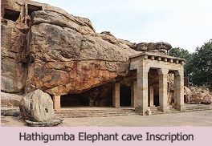
The Kanva dynasty produced four kings and their rule lasted only for 45 years. The history of Magadha after the fall of the Kanvas is devoid of any significance until the emergence of the
Gupta dynasty.
The Kanva rulers were
Vasudeva
Bhumi Mitra
Narayana
Susarman
The last Kanva ruler Susarman was assassinated by his powerful feudatory chief of Andhra named Simuka, who laid the foundation of the Satavahana dynasty.
The Kushanas in the north and the Satavahanas Within Bracket otherwise called as Andhras in the south flourished for about 300 years and 450 years, respectively. Simuka, the founder of the Satavahana dynasty, is said to have ruled for twenty-three years. His successor was his brother Krishna. The latter and his nephew Satakarni ruled for ten years each, establishing an empire, holding control over a vast area stretching from Rajasthan in the northwest to Andhra in the southeast and from Gujarat in the west to Kalinga in the east. Satakarni is said to have performed two horse sacrifices Within Bracket Asvamedhayaga, indicative of his imperial position.
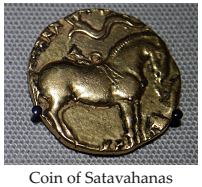
Gautamiputra Satakarni was the greatest ruler of the family. In the Nasik eulogy, published by his mother GautamiBalasri, Gautamiputra Satakarni is described as the destroyer of Sakas, Yavanas Within Bracket Greek and Pahlavas Within Bracket Parthians. The extent of the empire is also mentioned in the record. Their domain included Maharashtra, north Konkan, Berar, Gujarat, Kathiawar and Malwa. His ship coins are suggestive of Andhras’ skill in seafaring and their naval power. The Bogor inscriptions suggest that South India played an important role in the process of early state formation in Southeast Asia.
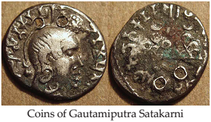
The Satavahana king Hala was himself a great scholar of Sanskrit. The Kantara school of Sanskrit flourished in the Deccan in the second century Before Christ. Hala is famous as the author of Sattasai Within Bracket otherwise called as Saptasati700 stanzas in Prakrit.
The Satavahana rulers were great builders. They began constructing Buddhist stupas in Amaravati. A bronze statue of the standing Buddha discovered in Oc-Eo Within Bracket an archaeological site in Within Bracket Vietnamresembles the Amaravati style. The later Satavahana kings issued lead or bronze coins depicting ships with two masts. A stone seal discovered in NakhonPathom in Thailand has the same design.
Gandhara, Madhura, Amaravati, Bodh Gaya, Sanchi and Bharhut were known for splendid monuments and art. The Mathura School of Sculpture produced images and life-size statues of the Buddhist, Brahmanical and Jain deities.
Box Item:
The world-famous life-size statues of Buddha at Bamiyan valley on the mountains of the erstwhile northwestern frontiers of ancient India Within Bracket currently in central Afghanistan and recently destroyed by the Talibanwere carved out of the solid rocks by the dedicated artists of the Gandhara School of Art during the post-Mauryan period.
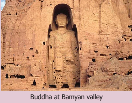
After the conquest of north-western India and the Punjab region, Alexander the Great left the conquered territories under provincial governors. Two of its eastern satrapies, Bactria and Parthia, revolted under their Greek Governors and declared their independence. The satrap of Bactria became independent under the leadership of Diodotus I and Parthia under Arsaces.
After the decline of the Mauryan empire, the Greek rulers of Bactria and Parthia started encroaching into the northwestern border lands of India. The Bactrian and Parthian settlers gradually inter-married and inter-mixed with the indigenous population. This facilitated the establishment of Indo-Greek and IndoParthian colonies along the north-western part of India.
Box Item:
Rulers of Indo Greeks
Demetrius 1 He was the son of Greco-Bactrian ruler Euthydemus.
He was king of Macedonia from 294 to 288 Before ChristWithin Bracket Before Common Era. Numismatic evidence proves that Demetrius issued bilingual square coins with Greek on the obverse and Kharosthi on the reverse. Scholars are not able to decide which of the three, named Demetrius, was the initiator of the Yavana era, commencing from second century Before Christ Within Bracket Before Common Erain India.
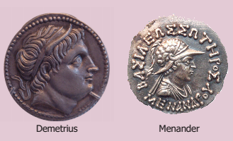
Menander– He was one of the best-known Indo-Greek kings. He is said to have ruled a large kingdom in the north-west of the country. His coins were found over an extensive area ranging from Kabul valley and Indus River to western Uttar Pradesh. MilindaPanha, a Buddhist text, is a discourse between Bactrian king Milinda and the learned Buddhist scholar Nagasena. This Milinda is identified with Menander. Menander is believed to have become a Buddhist and promoted Buddhism.
Coinage: Indo Greek rulers introduced a die system and produced properly shaped coins with inscription, symbols and engraved figures on them. Indians learnt this art from them.
Sculpture: The Gandhara School of Indian Art is heavily indebted to Greek influence. The Greeks were good cave builders. The Mahayana Buddhists learnt the art of carving out caves from them and became skilled in rock-cut architecture
The Indo-Greek rule in India was ended by the Sakas. Sakas as nomads came in huge numbers and spread all over northern and western India. The Sakas were against the tribe of Turki nomads. Sakas were Scythians, nomadic ancient Iranians, and known as Sakas in Sanskrit.
Box Item:
Rulers of Indo Parthians Within BracketPahlavas
Indo-Parthians came after the Indo-Greeks and the Indo-Scythians who were, in turn, defeated by the Kushanas in the second half of the first century Anno Domini Within Bracket CommonEra. Indo-Parthian kingdom or Gondopharid dynasty was founded by the Gondophernes. The domain of Indo-Parthians comprised Kabul and Gandhara. The name of Gondophares is associated with the Christian apostle Saint.Thomas. He came to India and according to Christian tradition, visited the court of Gondophares and embraced Christianity
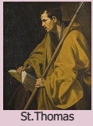
Saka rule was founded by Maos or Mogain in the Gandhara region and his capital was ‘Sirkap’. His name is mentioned in the Mora inscription. His coins bear images of Buddha and Siva.
Rudradaman was the most important and famous king of Sakas. His Junagadh or Girnar inscription was the first inscription in chaste Sanskrit. In India, the Sakas were assimilated into Indian society. They began to adopt Indian names and practise Indian religious beliefs.
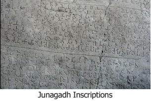
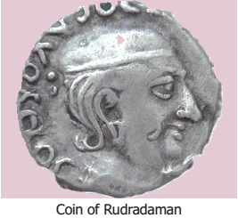
The Sakas appointed kshatrapas or satraps as provincial governors to administer their territories.
The Kushanas formed a section of the yueh-chi tribes, who inhabited northwestern China in the remote past. In the first century Before ChristWithin Bracket Before Common Era, the yueh-chi tribes were composed of five major sections, of which the Kushanas attained political ascendancy over others.
By the beginning of Christian era, all the yueh-chi tribes had acknowledged the supremacy of the Kushanas; they had shed their nomadic habits and settled down in the Bactrian and Parthian lands, adjacent to the north-western border of India.
The Kushanas overran Bactria and Parthia and gradually established themselves in northern India. Their concentration was mostly in the Punjab, Rajaputana and Kathiawar. Kushana rulers were Buddhists. Takshashila and Mathura continued to be great centres of Buddhist learning, attracting students from China and western Asia.
Kanishka was the greatest of all the Kushana emperors. He assumed sovereignty in 78 Anno Domini and proclaimed his rule by the foundation of a new era, which later became the Saka era.
The Kushana capital initially was Kabul. Later, it was shifted to Peshavar or Purushapura.
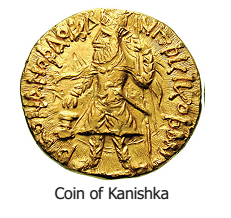
Rulers |
Contributions |
Rulers Kadphises 1 |
He was the first famous military and political leader of the Kushanas. He overthrew the Indo-Greek and Indo-Parthian rulers and established himself as a sovereign ruler of Bactria. He extended his power in Kabul, Gandhara and upto the Indus. |
Rulers Kadphises 2 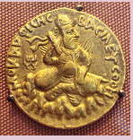 |
He maintained friendly relationship with the emperors of China and Rome and encouraged trade and commerce with the foreign countries. Some of his coins contained the inscribed figures of Lord Siva and his imperial titles were inscribed in the Kharosthi language. |
Kanishka conquered and annexed Kashmir. He waged a successful war against Magadha. He also waged a war against a ruler of Parthia to maintain safety and integrity in his vast empire on the western and south-western border. After the conquest of Kashmir and Gandhara, he turned his attention towards China. He defeated the Chinese general Pan-Chiang and safeguarded the northern borders of India from Chinese intrusion.
His empire extended from Kashmir down to Benaras, and the Vindhya Mountain in the south. It included Kashgar, Yarkhand touching the borders of Persia and Parthia.
Kanishka was an ardent Buddhist. Kanishka’s empire was a Buddhist empire. Kanishka adopted Buddhism under the influence of Asvaghosha, a celebrated monk from Pataliputra. Though a great warrior and an empire-builder, Kanishka was as equal as the exponent and champion of Mahayanism.
Kanishka made Buddhism as the state religion and built many stupas and monasteries in Mathura, Taxila and many other parts of his kingdom. He sent Buddhist missionaries to Tibet, China and many countries of Central Asia for the propagation of Buddha’s gospel.
He organised the fourth Buddhist Council at Kundalavana near Srinagar to sort out the differences between the various schools of Buddhism. It was only in this council that Buddhism was split into Hinayanism and Mahayanism.
Kanishka was a great patron of art and literature. His court was adorned with a number of Buddhist saints and scholars, like Asvaghosha, Vasumitra and Nagarjuna.
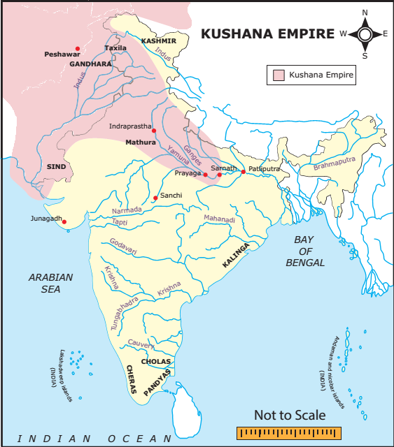
Box Item:
Asvaghosha was the celebrated author of the fist Sanskrit play, Buddhacharita.
He founded the town of Kanishkapura in Kashmir and furnished the capital of Purushapura with magnificent public buildings.
The Gandhara School of Art flourished during his time. The most favourite subject of the Gandhara Artists was the carving of sculptures of Buddha. Buddhist learning and culture was taken to China and Mongolia from Takshashila. The great Asiatic culture mingled with Indian Buddhist culture during the Kushana's time.
Kanishka’s successors were weak and incompetent. Kushana empire rapidly disintegrated into number of small principalities.
Elsewhere |
||
Kushana Empire corresponded with the last days of the Roman Republic, when Julius Ceasar was alive. It is said that Kushana Emperor sent a great embassy to Augustus Ceasar |
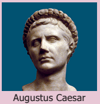 |
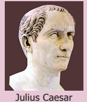 |
The break-up of the Mauryan empire resulted in the invasions of Sakas, Scythians, Parthians, Indo-Greeks and Kushanas from the north-west.
The last Mauryan emperor, Brihadratha, was assassinated by his own general, Pushyamitra Sunga, who established the Sunga dynasty in Magadha.
The history of Magadha after the fall of the Kanvas is devoid of any significance until the emergence of the Gupta dynasty.
The Kushanas in the north and the Satavahanas Within Bracket otherwise called as Andhras in the south flourished for about 300 years and 450 years, respectively.
Rudradaman was the most important and famous king of Sakas.
The best known of the Kushanas was Kanishka who was an ardent follower of Mahayana form of Buddhism. Gandhara Art developed during this period
Repulsed |
driven back by force |
விரட்டியடிக்கப்பட்டது |
thwarted |
prevent from accomplishing something |
முறியடிக்கப்பட்டது |
Encroachments |
intrusion on a person’s territory, rights etc, |
ஆக்கிரமிப்புகள் |
Renovated |
Restored Within Bracket something old, especially a building to a good state of repair |
புதுபிக்கப்பட்டது |
Assimilate |
absorb Within Bracket information, ideas or culture fully |
ஒன்றி போதல் |
ardent |
enthusiastic or passionate |
தீவிர |
magnificent |
impressively beautiful |
அற்புதமான |
1. Choose the correct answer
1. The last Mauryan emperor was killed by dash
a) Pushyamitra
b) Agnimitra
c) Vasudeva
d) Narayana
Answer: a) Pushyamitra
2. Dash was the founder of the Satavahana dynasty.
a) Simuka
b) Satakarani
c) Kanha
d) Sivasvathi
Answer: a) Simuka
3. Dash was the greatest of all the Kushana emperors.
a) Kanishka
b) Kadphises 1
c) Kadphises 2
d) Pan-Chiang
Answer: a) Kanishka
4. The Kantara School of Sanskrit flourished in the Dash during the 2nd century BC.
a) Deccan
b) north-west India
c) Punjab
d) Gangetic valley
Answer: a) Deccan
5. Sakas ruled over Gandhara region Dash as their capital.
a) Sirkap
b) Taxila
c) Mathura
d) Purushpura
Answer: a) Sirkap
2. Match the statement with the reason and tick the appropriate answer
1. Assertion (A): Colonies of Indo-Greeks and Indo-Parthians were established along
the north-western part of India.
Reason (R): The Bactrian and Parthian settlers gradually intermarried and intermixed
with the indigenous population.
Option a) Both A and R are correct and R is the correct explanation of A.
Option b) Both A and R are correct but R is not the correct explanation of A.
Option c) A is correct but R is not correct.
Option d) A is not correct but R is correct.
Answer: a) Both A and R are correct and R is the correct explanation of A.
2. Statement I: Indo-Greek rulers introduced the die system and produced coins with inscription and symbols, engraving figures on them.
Statement II: Indo-Greek rule was ended by the Kushanas.
a) Statement 1 is wrong, but statement 2 is correct.
b) Statement 2 is wrong, but statement 1 is correct
c) Both the statements are correct.
d) Both the statements are wrong.
Answer: b) Statement 2 is wrong, but statement 1 is correct
3.Circle the odd one
Pushyamitra, Vasudeva, Simuka, Kanishka
Answer: Kanishka
4.Answer the following in a word
1. Who was the last Sunga ruler?
Answer:Devabhuti
2. Who was the most important and famous king of Sakas?
Answer:Rudradaman
3. Who established the Kanva dynasty in Magadha?
Answer:Vasudeva
4. Who converted Gondophernes into Christianity?
Answer: St.Thomas
3. Fill in the blanks
1. Dash was the founder of Indo-Parthian Kingdom.
Answer: Arsaces
2.In the South, Satavahanas became independent after Dash death.
Answer: Susarman
3. Hala is famous as the author of Dash
Answer: Sattasai With in Bracket Saptasati
4. Dash was the last ruler of the Kanva dynasty.
Answer: Susarman
5. Kushana's later capital was Dash
Answer: Peshawar Within Bracket Like as purushpura
4. State whether True or False
1. Magadha continued to be a great centre of Buddhist culture even after the fall of the Mauryan Empire.
Answer: True
2. We get much information about Kharavela from Hathigumba inscriptions.
Answer: True
3. Simuka was the founder of satavahana dynasity.
Answer: True
4. Buddhacharita was written by Asvaghosha.
Answer: True
5. Match the following
1 Patanjali 1. Kalinga
2 Agnimitra 2. Indo-Greek
3 King Kharavela 3. Indo-Parthians
4 Demetrius 4. Second grammarian
5 Gondophernes 5.Malavikagnimitra
a) 4 3 2 1 5
b) 3 4 5 1 2
c) 1 5 3 4 2
d) 2 5 3 1 4
Answer:
1 Patanjali Second grammarian
2 Agnimitra Malavikagnimitra
3 King Kharavela Kalinga
4 Demetrius Indo-Greek
5 Gondophernes Indo-Parthians
6. Find out the wrong statement from the following
1. The Kushanas formed a section of the yueh-chi tribes who inhabited north-western China.
2. Kanishka made Jainism the state religion and built many monasteries.
3. The Great Stupa of Sanchi and the railings which enclose it belong to the Sunga period.
4. Pan-Chiang was the Chinese general defeated by Kanishka.
Answer: 2. Kanishka made Jainism the state religion and built many monasteries
7. Answer in one or two sentences
1. What happened to the last Mauryan emperor?
2. Write a note on Kalidasa’s Malavikagnimitra.
3. Name the ruler of Kanva dynasty.
4. Highlight the literary achievements of Satavahanas.
5. Name the places where Satavahana’s monuments are situated.
6. Give an account of the achievements of Kadphises 1.
7. Name the Buddhist saints and scholars who adorned the court of Kanishka.
8. Answer the following
1. Who invaded India after the decline of the Mauryan empire?
2. Give an account of the conquests of Pushyamitra Sunga.
3. Write a note on Gautamiputra Satakarni.
4. What do you know of Gondopharid dynasty?
5. Who was considered the best-known Indo-Greek King.Why?
6. Who were Sakas?
7. Give an account of the religious policy of Kanishka.
9. Higher Order Thinking
1. The importance of Gandhara School of Art.
2. Provide an account of trade and commerce during the post-Mauryan period in South India.
10. Activities
1. Prepare an album with centres of archaeological monuments of Satavahanas and Kushanas.
2. Arrange a debate in the classroom on the cultural contribution of Indo-Greeks Sakas and Kushanas.
11. Answer Grid
Who wrote Brihastkatha Answer: Gunadhya |
Name the Satavahana ruler who performed two Asvamedha sacrifices. Answer: Satakarni |
How many years did the Satavahanas rule the Deccan? Answer: 450 Years |
Who laid the foundation of the Saka era? Answer: Mao’sv Within Bracket or Mogain
|
What was the favourite subject of the Gandhara artists? Answer: Carving of Sculptures of Buddha |
Where did Kanishka organise the fourth Buddhist Council? Answer: Kundalavana Within Bracket Near Srinagar |
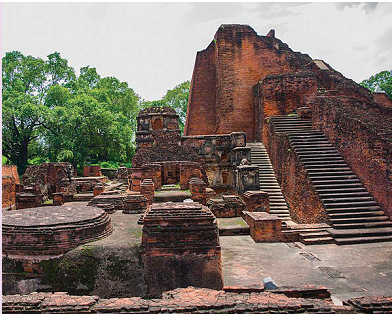
To know the establishment of Gupta dynasty and the empire building efforts of Gupta rulers
To understand the polity, economy and society under Guptas
To get familiar with the contributions of the Guptas to art, architecture, literature, education, science and technology
To explore the significance of the reign of HarshaVardhana
By the end of the Third Century Anno Domini Within Bracket Common Era, the powerful empires established by the Kushanas in the north and Satavahanas in the south had lost their greatness and strength. After the decline of Kushanas and Satavahanas, Chandragupta carved out a kingdom and establish his dynastic rule, which lasted for about two hundred years.
After the downfall of the Guptas and thereafter an interregnum of nearly 50 years, Harsha of Vardhana dynasty ruled North India from 606 to 647 Anno Domini Within Bracket Common Era.
Gold, silver and copper coins issued by Gupta rulers.
Allahabad Pillar Inscription of Samudragupta.
The Mehrauli Iron Pillar Inscription.
Udayagiri Cave Inscription, Mathura Stone Inscription and Sanchi StoneInscription of Chandragupta2
Bhitari Pillar Inscription of Skandagupta.
The Gadhwa Stone Inscription.
Madubhan Copper Plate Inscription Within Bracket Punjab
Sonpat Copper Plate
Nalanda Inscription on clay seal
Vishnu, Matsya, Vayu and Bhagavata Puranas and Niti Sastras of Narada
Visakhadatta’s Devichandraguptam and Mudrarakshasa and Bana’s Harshacharita
Dramas of Kalidasa.
Accounts of Chinese Buddhist monk Fahien who visited India during the reign of Chandragupta 2.
Harsha’s Ratnavali, Nagananda, Priyadharshika
Hiuen-Tsang's Si-Yu-Ki
Sri Gupta is considered to be the founder of the Gupta dynasty. He is believed to have reigned over parts of present-day Bengal and Bihar. He was the first Gupta ruler to be featured on coins. He was succeeded by his son Ghatotkacha. Both are mentioned as Maharajas in inscriptions.
Chandragupta 1 married Kumaradevi of the famous and powerful Lichchhavi family. Having gained the support of this family, Chandragupta could eliminate various small states in northern India and crown himself the monarch of a larger kingdom. The gold coins attributed to Chandragupta bear the images of Chandragupta, Kumaradevi and the legend ‘Lichchhavayah’.
Box Item:
Lichchhavi was an old gana–sanga and its territory lay between the Ganges and the Nepal Terai.
Samudragupta, son of Chandragupta 1, was the greatest ruler of the dynasty. The Prayog Prashasti, composed by Samudragupta’s court poet Harisena, was engraved on the Allahabad Pillar. This Allahabad Pillar inscription is the main source of information for Samudragupta’s reign.
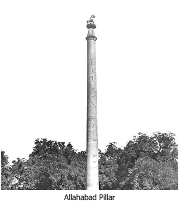
Box Item:
Prashasti
Prashasti is a Sanskrit word, meaning commendation or ‘in praise of’. Court poets flattered their kings listing out their achievements. These accounts were later engraved on pillars so that the people could read them.
Samudragupta was a great general and when he became emperor, he carried on a vigorous campaign all over the country and even in the south. In the southern Pallava kingdom, the king who was defeated by Samudragupta was Vishnugopa.
Samudragupta conquered nine kingdoms in northern India. He reduced 12 rulers of southern India to the status of feudatories and forced them to pay tribute. He received homage from the rulers of East Bengal, Assam, Nepal, the eastern part of Punjab and various tribes of Rajasthan.
Box Item:
Samudragupta was a devotee of Vishnu. He revived the Vedic practice of performing horse sacrifice. Performed by kings to prove their imperial sovereignty. He issued gold coins and in one of them, he is portrayed playing harp Within Bracket veenai. Samudragupta was not only a great conqueror but a lover of poetry and music and for this, he earned the title ‘Kaviraja’.
Box Item:
Sri Meghavarman, the Buddhist king of Ceylon, was a contemporary of Samudragupta.
Chandragupta II was the son of Samudragupta. He was also known as Vikramaditya. He conquered western Malwa and Gujarat by defeating the Saka rulers. He maintained a friendly relationship with the rulers of southern India. The iron pillar near Qutub Minar is believed to have been built by Vikramaditya. Fahien, a Buddhist scholar from China, visited India during his reign. Vikramaditya is said to have assembled the greatest writers and artists Within Bracket Navaratna Like as Nine Jewels in his court. Kalidasa is said to be one among them.
Navaratna in the court of Vikramaditya |
|
Kalidasa |
Sanskrit Poet |
Harisena |
Sanskrit Poet |
Amarasimha |
Lexicographer |
Dhanvantri |
Physician |
Kahapanaka |
Astrologer |
Sanku |
Architect |
Varahamihira |
Astronomer |
Varauchi |
Grammarian and Sanskrit Scholar |
Vittalbhatta |
Magician |
Box Item:
The surnames of Chandragupta 2 were Vikramaditya, Narendrachandra, Simhachandra, Narendrasimha, Vikrama Devaraja, Devagupta and Devasri.
Chandragupta 2 was succeeded by his son Kumaragupta 1, who built the famous Nalanda University.
Kumaragupta’s successor Skandagupta had to face a new threat in the form of the invasion of Huns. He defeated them and drove them away. But after twelve years, they came again and broke the back of the Gupta Empire. The last of the great Guptas was Baladitya, assumed to have been Narasimha Gupta 1. He was himself attracted towards Buddhism. He was paying tribute to Mihirakula but was distressed by his hostility towards Buddhism. So, he stopped paying tribute. Though Baladitya succeeded in imprisoning him, Mihirakula turned treacherous and drove away Baladitya from Magadha. After Baladitya, the great Gupta Empire faded away. The last recognised king of the Gupta Empire was Vishnugupta.
Box Item:
Fahien
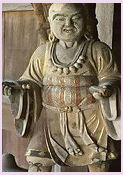
During the reign of Chandragupta 2, the Buddhist monk Fahien visited India. His travel accounts provided us information about the socio-economic, religious and moral conditions of the people of the Gupta age. According to Fahien, the people of Magadha were happy and prosperous, that justice was mildly administered and there was no death penalty. Gaya was desolated. Kapilavasthu had become a jungle, but at Pataliputra people were rich and prosperous.
The divine theory of kingship Within Bracket the concept that king is the representative of God on earth and so he is answerable only to God and not to anyone elsewas practised by the Gupta rulers. The Gupta kings wielded enormous power in political, administrative, military and judicial spheres. The Gupta king was assisted by a council of mantris Within Bracket like as ministers. The council consisted of princes, high officials and feudatories. A large number of officials were employed by the Gupta rulers to carry on the daytoday administration of the country. High-ranking officials were called dandanayakas and maha dandanayakas.
The Gupta Empire was divided into provinces known as deshas or bhuktis. They were administered by the governors, designated as uparikas. The province was divided into districts such as vaishyas and they were controlled by the officers known as vishyapatis. At the village level, there were functionaries such as gramika and gramadhyaksha.
The extensive empire shows the important role of military organisation. Seals and inscriptions mentioned military designations as baladhikrita and mahabaladhikrita Within Bracket commander of infantry and cavalry respectively. The system of espionage included spies known as dutakas.
Nitisara, authored by Kamandaka, emphasises the importance of the royal treasury and mentions various sources of revenue. The military campaigns of kings like Samudragupta were financed through revenue surpluses. Land tax was the main revenue to the government. The condition of peasants was pathetic. They were required to pay various taxes. They were reduced to the position of serfs.
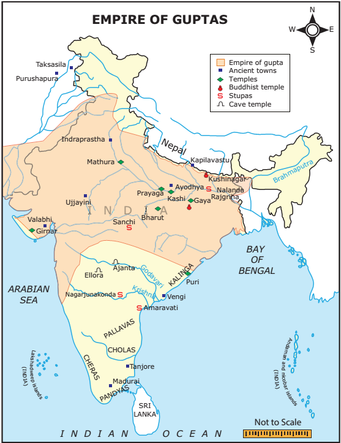
Classification of land during Gupta Period |
|
Kshetra |
Cultivable Land |
Khila |
Waste Land |
Aprahata |
Jungle or Forest Land |
Vasti |
Habitable Land |
Gapata Saraha |
Pastoral Land |
The contribution of the traders for the development of Gupta’s economy was very impressive. There were two types of traders, namely Sresti and Sarthavaha.
Box Item:
Nalanda University
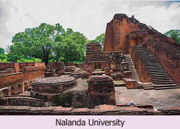
Nalanda University flourished under the patronage of the Gupta Empire in the fifth and sixth centuries and later under emperor Harsha of Kanauj.
At Nalanda, Buddhism was the main subject of study. Other subjects like Yoga, Vedic literature and Medicine were also taught.
Hiuen Tsang spent many years studying Buddhism in the University.
Eight Mahapatashalas and three large libraries were situated on the campus.
Nalanda was ravaged and destroyed by Mamluks Within Bracket Turkish Muslimsunder Bhaktiyar Khalji.
Today, it is a United Nations Educational Scientific and Cultural Organization World Heritage Site.
Box Item:
Who were the Huns?
Huns were the nomadic tribes, who, under their great Attila, were terrorising Rome and Constantinople. Associated with these tribes were the White Huns who came to India through Central Asia. They undertook regular invasions and were giving trouble to all Indian frontier states. After defeating Skandagupta, they spread across Central India. Their chief, Toromana, crowned himself as king. After him, his son Mihirakula ruled the captured territories. Finally, Yasodharman, ruler of Malwa in Central India, defeated them and ended their rule.
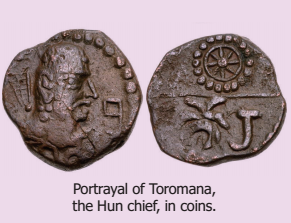
Sresti |
Sarthavaha |
Sresti traders usually settled at a standard place. |
Sarthavaha traders were caravan traders who carried their goods to different places |
Trade items ranged from daily products to valuable and luxury goods. The important trade goods were pepper, gold, copper, iron, horses and elephants. Lending money at a high rate of interest was in practice during the Gupta period.
The Guptas developed roadways connecting different parts of the country. Pataliputra, Ujjain, Benaras, Mathura were the famous trade centres. Ports in western Within Bracket Kalyan, Mangalore, Malabarand eastern Within Bracket amralipti in Bengalcoasts of India facilitated trade.
Box Item:
Samudragupta introduced the Gupta monetary system. Kushana coins provided inspiration to Samudragupta. The Gupta gold coins were known as Dinara. Guptas issued many gold coins but comparatively fewer silver and copper coins. However, the post-Gupta period saw a fall in the circulation of gold coins, indicating the decline in the prosperity of the empire.
Mining and metallurgy were the most flourishing industries during the Gupta period.
The most important evidence of development in metallurgy was the Mehrauli Iron Pillar installed by King Chandragupta in Delhi. This monolithic iron pillar has lasted through the centuries without rusting.
Box Item:
The metals used by them were: iron, gold, copper, tin, lead, brass, bronze, bell- metal, mica, manganese and red chalk.
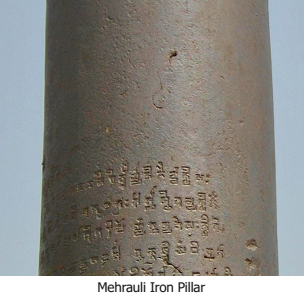
The society that adhered to the four varna system was patriarchal. According to laws of Manu, which was in force, women should be under the protection of their father, husband or eldest son. polygamy was widely prevalent. The kings and feudatory lords often had more than one wife. Inscriptions refer to Kubernaga and Dhrubaswamini as the queens of Chandragupta II. Sati was practised during the Gupta rule.
Slavery was not institutionalised in India, as in the West. But there are references to the existence of various categories of slaves during the Gupta age.
There was a revival of Vedic religion and Vedic rites. Samudragupta and Kumaragupta 1 performed Asvamedha Yagna Within Bracket a horse sacrifice ritual. We notice the beginning of image worship and the emergence of two sects, namely Vaishnavism and Saivism, during the Gupta period. Buddhism also continued to flourish through it split into two sects, namely Hinayana and Mahayana.
The Guptas were the first to construct temples, which evolved from the earlier tradition of rock-cut shrines. Adorned with towers and elaborate carvings, these temples were dedicated to all Hindu deities. The most notable rock-cut caves are found at Ajanta and Ellora Within Bracket Maharashtra, Bagh Within Bracket Madhya Pradesh and Udaygiri Within Bracket Odisha. The structural temples built during this period resemble the characteristic features of the Dravidian style.
Two remarkable examples of Gupta metal sculpture are Within Bracket 1 a copper image of Buddha about 18 feet high at Nalanda and Within Bracket 2. Sultanganj Buddha seven-and-a-half feet in height. The most important examples of the Gupta paintings are found on the Fresco of the Ajanta caves and the Bagh cave in Gwalior.
Though the language spoken by the people was Prakrit, the Guptas made Sanskrit the official language and all their epigraphic records are in Sanskrit. The Gupta period also saw the development of Sanskrit grammar based on the grammar of Panini and Patanjali who wrote Ashtadhyayi and Mahabhashya respectively.
A Buddhist scholar from Bengal, Chandrogomia, composed a book on grammar titled Chandravyakaranam. Kalidasa’s famous dramas were Sakunthala, Malavikagnimitraand Vikramaoorvashiyam. Other significant works of Kalidasa were Meghaduta, Raghuvamsa, Kumarasambava and Ritusamhara.
Invention of zero and the consequent evolution of the decimal system were the legacy of Guptas to the modern world.
Aryabhatta, Varahamihira and Brahmagupta were foremost astronomers and mathematicians of the time. Aryabhatta, in his book Surya Siddhanta, explained the true causes of solar and lunar eclipses. He was the first Indian astronomer to declare that the earth revolves around its own axis.
Dhanvantri was a famous scholar in the field of medicine. He was a specialist in Ayurveda. Charaka was a medical scientist. Susruta was the first Indian to explain the process of surgery
The founder of the Vardhana or Pushyabhuti dynasty ruled from Thaneswar. Pushyabhuti served as a military general under the Guptas and rose to power after the fall of the Guptas. With the accession of Prabakaravardhana, the Pushyabhuti family became strong and powerful.
Rajavardhana, the eldest son of Prabhakaravardhana, ascended the throne after his father’s
death. Rajavardhana's sister Rajayashri's husband, Raja of Kanauj, was killed by the Gauda
ruler Sasanka of Bengal. Sasanka also imprisoned Rajayashri. Rajavardhana, in the process of
retrieving his sister, was treacherously killed by Sasanka.
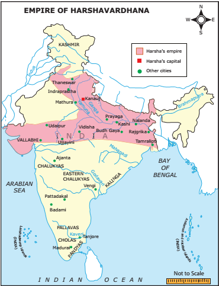
This resulted in his younger brother Harshavardhana becoming king of Thaneswar. The notables of the Kanauj kingdom also invited Harsha to take its crown. After becoming the ruler of both Thaneswar and Kanauj, Harsha shifted his capital from Thaneswar to Kanauj.
The most popular king of the vardhana dynasty was Harshavardhana. Harsha ruled for 41 years. His feudatories included those of Jalandhar, Kashmir, Nepal and Valabhi. Sasanka of Bengal remained hostile to him.
It was Harsha who unified most of northern India. But the extension of his authority in the south was checked by Chalukya king Pulikesin 2. The kingdom of Harsha disintegrated rapidly into small states after his death in 648 Anno Domini Within Bracket CommonEra. He maintained a cordial relationship with the rulers of Iran and China.
Box Item:
Harsha met the Chinese traveller, Hiuen Tsang, at Kajangala near Rajmahal Within Bracket Jharkhand for the first time.
The emperor was assisted by a council of ministers. The prime minister occupied the most
important position in the council of ministers. Bhaga, Hiranya and Bali were the three kinds of tax collected during Harsha’s reign. Criminal law was more severe than that of the Gupta age. Life imprisonment was the punishment for violation of the laws and for plotting against the king.
Perfect law and order prevailed throughout the empire. Harsha paid great attention to discipline and strength of the army. Harsha built charitable institutions for the stay of the travellers, and to care for the sick and the poor.
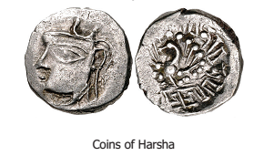
Harsha was the worshipper of Shiva in the beginning, but he embraced Buddhism under the influence of his sister Rajyashri and the Buddhist monk and traveller Hiuen Tsang. He belonged to Mahayana school of thought. Harsha treated Vedic scholars and Buddhist monks alike and distributed charities equally to them. He was the last Buddhist sovereign in India. As a pious Buddhist, Harsha stopped the killing of animals for food.
Box Item:
Hiuen Tsang, the ‘prince of pilgrims’, visited India during Harsha’s reign. His Si-Yu-Ki provides detailed information about the social, economic, religious and cultural conditions of India during Harsha’s time. Hiuen Tsang tells us how Harsha, though a Buddhist, went to participate in the great kumbhamela held at Prayag.
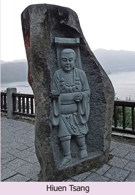
He was noted for his policy of religious toleration and used to worship the images of Buddha, Shiva and Sun simultaneously. He summoned two Buddhist assemblies, one at Kanauj and another at Prayag.
Box Item:
The assembly at Kanauj was attended by 20 kings. A large number of Buddhist, Jain and Vedic scholars attended the assembly. A golden statue of Buddha was consecrated in a monastery and a small statue of Buddha Within Bracket three feetwas carried in a procession.
In the assembly at Prayag, Harsha distributed his wealth among the Buddhists, Vedic scholars and poor people. Harsha offered fabulous gifts to the Buddhist monks on all the four days of the assembly
Harsha, himself a poet and dramatist, gathered around him the best of poets and artists. Harsha’s popular works are Ratnavali, Nagananda and Priyadarshika. His royal court was adorned by Banabhatta, Mayura, Hardatta and Jayasena.
Temples and monasteries functioned as centres of learning. Kanauj became a famous city. Harsha constructed a large number of viharas, monasteries and stupas on the bank of the Ganges. The Nalanda University, a university and monastery combined, was said to have had 10,000 students and monks in residence, when Hiuen Tsang visited the university.
BOX ITEM
Elsewhere
Chandragupta I was the contemporary of Constantine the Great, the Roman Emperor,
who founded Constantinople.
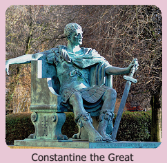
Harsha’s time coincided with the early days of the Tang Dynasty of China. Their capital Xian was a great centre of art and learning.
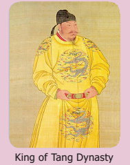
Sri Gupta was the founder of Gupta dynasty.
Chandragupta 1, Samudragupta and Chandragupta 2 were the great kings of Gupta dynasty
Vishnugupta was the last recognised king of Gupta Empire
Divine Right Theory of kingship was practised by the Gupta rulers
Mining and metallurgy were the most flourishing industries during the Gupta Period.
The society that adhered to four varna system was patriarchal.
There was a revival of Vedic religion and Vedic rites.
The Guptas were the first to construct temples which evolved from the earlier tradition of rock-cut shrines.
Aryabhatta, Varahamihira and Brahmagupta were foremost astronomers and mathematicians of the time.
Harsha was a prominent ruler of Vardhana dynasty and was elevated to the position of an emperor.
Harsha was a great artist and dramatist and contributed to the development of literature and art.
Hiuen Tsang visited Nalanda and wrote his useful travel accounts, which help us understand the condition of India during Harsha’s reign.
Harsha, though a strong follower of Buddhism, also promoted Vedic religion.
Engraved |
Carved or inscribed |
பொறிக்கபட்டஅல்லதுசெதுக்கிய |
Flattered |
Lavish insincere praise and compliments upon Within Bracket someone especially to further one’s own interest |
முகஸ்துதி |
Collapse |
fall |
சரிவு |
Pathetic |
pitiful |
பரிதாபகரமான |
adhered to |
abide by, bound by |
பின்பற்றபட்ட |
pastoral land |
land or farm used for grazing cattle |
மேய்ச்சல்நிலம் |
Portrayed |
depicted in a work of art or literature |
சித்தரிக்கப்பட்டுள்ளது |
Desolated |
made unfit for habitation |
பாழடைந்த |
1.Choose the correct answer
1. Dash was the founder of the Gupta dynasty.
a) Chandragupta 1
b) Sri Gupta
c) Vishnu Gopa
d) Vishnugupta
Answer: b) Sri Gupta
2. Prayog Prashasti was composed by Dash
a) Kalidasa
b) Amarasimha
c) Harisena
d) Dhanvantri
Answer: c) Harisena
3. The monolithic iron pillar of Chandragupta is at Dash
a) Mehrauli
b) Bhitari
c) Gadhva
d) Mathura
Answer: a) Mehrauli
4. Dash was the first Indian to explain the process of surgery.
a) Charaka
b) Sushruta
c) Dhanvantri
d) Agnivasa
Answer: b) Sushruta
5. Dash was the Gauda ruler of Bengal.
a) Sasanka
b) Maitraka
c) Rajavardhana
d) Pulikesin 2
Answer: a) Sasanka
2. Match the statement with the reason and tick the appropriate answer
1. Assertion (A): Chandragupta 1 crowned himself as a monarch of a large kingdom after
eliminating various small states in Northern India.
Reason (R): Chandragupta 1 married Kumaradevi of Lichchavi family.
Option a) Both A and R are true and R is the correct explanation of A.
optionb) Both A and R are correct but R is not the correct explanation of A.
option c) A is correct but R is not correct.
Option d) A is not correct but R is correct.
Answer: a) Both A and R are true and R is the correct explanation of A.
2. Statement 1: Chandragupta II did not have cordial relationship with the rulers of South India.
Statement 2: The divine theory of kingship was practised by the Gupta rulers.
a) Statement 1 is wrong but statement 2 is correct.
b) Statement 2 is wrong but statement 1 is correct.
c) Both the statements are correct.
d) Both the statements are wrong.
Answer: a) Statement 1 is wrong but statement 2 is correct.
3. Which of the following is arranged in chronological order?
a) Srigupta – Chandragupta 1 – Samudragupta – Vikramaditya
b) Chandragupta 1 – Vikramaditya - Srigupta – Samudragupta
c) Srigupta – Samudragupta – Vikramaditya -Chandragupta 1
d) Vikramaditya - Srigupta – Samudragupta - Chandragupta 1
Answer: a) Srigupta – Chandragupta 1 – Samudragupta – Vikramaditya
4. Consider the following statements and find out which of the following statement(s) is or are
correct
1. Lending money at a high rate of interest was practised.
2. Pottery and mining were the most flourishing industries.
a) 1 is correct
b) 2 is correct
c) Both 1 and 2 are correct
d) Both 1 and 2 are wrong
Answer: a) 1 is correct
5. Circle the odd one
1. Kalidasa, Harisena, Samudragupta, Charaka.
Answer: Samudragupta
2. Ratnavali, Harshacharita, Nagananda, Priyadharshika.
Answer: Harshacharita
3. Fill in the blanks
1. Dash the king of Ceylon, was a contemporary of Samudragupta.
Answer: Sri Mehavarman
2. Buddhist monk from China Dash visited India during the reign of Chandragupta 2.
Answer: Fahien
3. Dash invasion led to the downfall of the Gupta Empire.
Answer: Huns
4. Dash was the main revenue to the Government.
Answer: Land tax
5. The official language of the Guptas was Dash
Answer: Sanskrit
6. Dash the Pallava king was defeated by Samudragupta.
Answer: Vishnugopa
7. Dash was the popular king of the Vardhana dynasty.
Answer: Harshavarthana
8. Harsha shifted his capital from Dash to Kanauj.
Answer: Thaneswar
4. State whether True or False
1. Dhanvantri was a famous scholar in the field of medicine. Answer True
2. The structural temples built during the Gupta period resemble the Indo-Aryan style. Answer False
3. Sati was not in practice in the Gupta Empire. Answer: False
4. Harsha belonged to the Hinayana school of thought. Answer: False
5. Harsha was noted for his religious intolerance. Answer: False
5. Match the following
A B
a. Mihirakula 1 Astronomy
b. Aryabhatta 2 Kumaragupta
c. Painting 3 Skandagupta
d. Nalanda University 4 Caravan trader
e. Sartavaga 5 Bagh
a 1 2 4 3 5
b 2 4 1 3 5
c 3 1 5 2 4
d 3 2 1 4 5
Answer: option c is correct
a. Mihirakula Skandagupta
b. Aryabhatta Astronomy
c. Painting Bagh
d. Nalanda University Kumaragupta
e. Sartavaga Caravan trade
B
a. Bana 10,000 students
b. Harsha Prayag
c. Nalanda University Harshacharita
d. Hiuen -Tsang Ratnavali
e. Buddhist Assembly Si-Yu-Ki
a 4 3 2 1 5
b 5 2 1 3 4
c 3 4 1 5 2
d 2 1 3 4 5
Answer option c is correct
Answer:
a. Bana Harshacharita
b. Harsha Ratnavali
c. Nalanda University 10,000 students
d. Hiuen -Tsang Si-Yu-Ki
e. Buddhist Assembly Prayag
6. Answer in one or two sentences
1. Who was given the title Kaviraja? Why?
2. What were the subjects taught at Nalanda University?
3. Explain the Divine Theory of Kingship.
4. Highlight the achievement of Guptas in metallurgy.
5. Who were the Huns?
6. Name the three kinds of tax collected during Harsha's reign.
7. Name the books authored by Harsha.
7. Answer the following briefly
1. Write a note on Prashasti.
2. Give an account of Samudragupta’s military conquests.
3. Describe the land classification during the Gupta period.
4. Write about Sresti and Sarthavaha traders.
5. Highlight the contribution of Guptas to architecture.
6. Name the works of Kalidasa.
7. Estimate Harshvardhana as a poet and a dramatist.
8. Higher Order Thinking
1. The gold coins issued by Gupta kings indicate Dash.
a) the availability of gold mines in the kingdom
b) the ability of the people to work with gold
c) the prosperity of the kingdom
d) the extravagant nature of kings
Answer: c) the prosperity of the kingdom
2. The famous ancient paintings at Ajanta were painted on Dash.
a) walls of caves
b) ceilings of temples
c) rocks
d) papyrus
Answer: a) walls of caves
3. Gupta period is remembered for Dash.
a) renaissance in literature and art
b) expeditions to southern India
c) invasion of Huns
d) religious tolerance
Answer: a) renaissance in literature and art
4. What did Indian scientists achieve in astronomy and mathematics during the Gupta period?
9. Student activity
1. Stage any one of the dramas of Kalidasa in the classroom.
2. Compare and contrast the society of Guptas with that of Mauryas.
10. Life Skills
1. Collect information about the contribution of Aryabhatta, Varahamihira and Brahmagupta to astronomy.
2. Visit a nearby Indian Space Research Orgainsation centre to know more about satellite launching.
11. Answer Grid
Who was Toromana? Answer:Chief Of White Huns |
Name the high-ranking officials of Gupta Empire. Answer: Dandanayakas, Maha Dandanayakas |
Name the Gupta kings who performed Asvamedha yagna. Answer: Samudragupta and Kumaragupta 2 |
Name the book which explained the causes for the lunar and solar eclipses. Answer: Surya Siddhanta |
Name the first Gupta king to find a place on coins. Answer: Samudragupta |
Which was the main source of information to know about Samudragupta's reign? Answer: Allahabad Pillar |
Harsha was the worshipper of Dash in the beginning. Answer: Shiva |
Dash University reached its fame during the Harsha period. Answer: Nalanda |
I C T CORNER
THE AGE OF EMPIRES:
GUPTAS AND VARDHANAS
This activity is to explore Maps. You can know about countries, capitals, flags and cities in all the
continents using an Educational Interactive game Seterra Map Quiz.
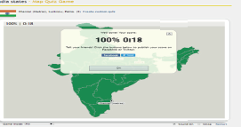
Steps:
Step 1: Open the Browser and type the given URL Within Bracket or Scan the QR Code.
Step 2: Free map Quiz page will appear on the screen.
Step 3: Scroll down and You can select any continent or CountryWithin Bracket ex. India Cities
Step 4: Explore various places on the map, play and create customized quiz
activities.
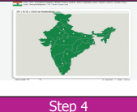
Browse in the link
Web: https://online.seterra.com/en/
Within Bracket or scan the QR Code
Mobile: https://play.google.com/store/apps/details?id=com.seterra.free
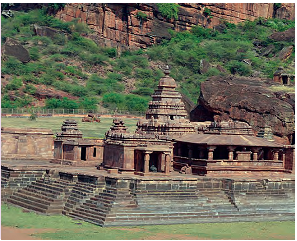
To know the southern Indian states that emerged after the fall of the Mauryan Empire
To acquire information of the ruling dynasties such as Pallavas, Chalukyas and Rashtrakutas and their domains
To understand their contribution to society and culture with reference to literature, art and architecture
To become familiar with the artistic and architectural splendour of Mamallapuram shore temple, Ellora monuments and Elephanta cave temples
By the early Seventh century, synchronising with the Harsha’s reign in the north, the far south had come under the control of the Pallava kings of Kanchipuram. Pallava sovereignty included the domains of the Cholas and the Pandyas. The latter were then emerging as ruling dynasties in their respective river valley regions. Much of the central and eastern Deccan was under the Chalukyas of Badami Within Bracket like asVatapi, who were then pushed away by the Rashtrakutas. The medieval period in India was marked by the emergence of regional centres of power. There was no single imperial power like Mauryas or Guptas who exercised control over the greater part of India in this period.
The Pallava kings ruled around the prosperous agrarian settlement and important trade centre of Kanchipuram on the southeast coast of India. Kanchipuram was well known to Chinese and Roman merchants. From the flourishing trade centre of Kanchipuram, the later Pallavas extended their sovereignty over all the Tamil-speaking regions during the Seventh and Eighth centuries. The central part of their kingdom, however, was Thondaimandalam, a large political region comprising northern parts of Tamil Nadu and the adjoining Andhra districts.
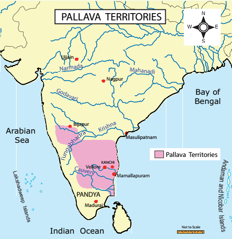
Sources
Inscriptions |
Mandagapattu Cave, Aihole Inscription of pulakesin 2 |
Copper plates |
Kasakudi Plates |
Literature |
Mattavilasa Prahasana, Avanthi Sundarakatha, Kalingathu Parani, Periya Puranam, Nandi Kalambagam |
Foreign Notice |
Accounts of Chinese traveller Hiuen Tsang |
There were early Pallava rulers who were feudatories of Satavahanas. Simhavishnu, son of Simhavarman 2 around 550 Anno Domini Within Bracket Common Era, created a strong Pallava kingdom after destroying the Kalabhras. He defeated many kings in the south including the Cholas and the Pandyas. His able son was Mahendravarman 1. He was succeeded by his son Narasimhavarman 1. The other prominent Pallava rulers were Narasimhavarman 2 or Rajasimha and Nandivarman 2 The last Pallava ruler was Aparajita.
Mahendravarman Within Bracket c. From 600 to 630 Anno Domini Within Bracket Common Era contributed to the greatness of the Pallava kingdom. Mahendravarman 1 was a follower of Jainism in the early part of his rule. He embraced Saivism by the Saivite saint Appar Within Bracket like as Tirunavukkarasar. He was a great patron of art and architecture. He is known for introducing a new style to Dravidian architecture, which is referred to as ‘Mahendra style’. Mahendravarman also wrote plays, including Within Bracket c. 620. MattavilasaPrahasana. Within Bracket the Delight of the Drunkards in Sanskrit, which denigrates Buddhism.
Mahendravarman’s reign involved constant battles with the Western Chalukya kingdom of Badami under Pulakesin 2. Pulakesin seems to have defeated Mahendravarman in one of the battles and taken over a large part of his territory Within Bracket Vengi in the north. His son Narasimavarman1 Within Bracket c. from 630 to 668 avenged the defeat by capturing Vatapi, the capital of Chalukyas. He set Vatapi on fire, killing Pulakesin in the process.
Box Item:
Narasimhavarman 1 ’s army general was Paranjothi. Popularly known as Siruthondar Within Bracket one of the 63 Nayanmars, Paranjothi led the Pallava army during the invasion of Vatapi. After the victory he had a change of heart and devoted himself to Lord Siva – Periya Puranam.
Narasimhavarman 2 Within Bracket c. from 695 to 722, also known as Rajasimha, was a great military strategist. He exchanged ambassadors with China. His reign was comparatively free from any political disturbance. Therefore, he could concentrate on temple-building activities. During his reign, the famous Kailasanatha temple at Kanchipuram was built.
Name of the King |
Titles Adopted |
Name of the KingSimhavishnu |
Titles Adopted Avanisimha |
Name of the KingMahendravarma 1 |
Titles Adopted Sankirnajati Titles Adopted Mattavilasa Titles Adopted Gunabhara Titles Adopted Chitrakarapuli Titles Adopted Vichitra Chitta |
Name of the KingNarasimhavarma 1 |
Titles AdoptedMamallan, Vatapi Kondan |
The Pallava period is known for its architectural splendour. The Shore Temple and various other temples carved from granite monoliths and the Varaha cave Within Bracket SeventhCentury at Mamallapuram,
are illustrious examples of Pallava architecture. In 1984, Mamallapuram was added to the list of United Nations Educational Scientific and Cultural Organization World Heritage Sites. Pallava architecture can be classified as
1. Rock-Cut temples – Mahendravarman style
2. Monolithic Rathas and Sculptural Mandapas – Mamallan style
3. Structural Temples – Rajasimhan style and Nandivarman style
The best examples of MahendraVarman style monuments are cave temples at Mandagapattu, Mahendravadi, Mamandur, Dalavanur, Tiruchirapalli, Vallam, Tirukazhukkundram and Siyamangalam
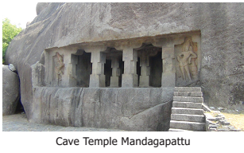
The five rathas Within Bracket chariots, popularly called Panchapandavar rathas, signify five different styles of temple architecture. Each ratha has been carved out of a single rock. So, they are called monolithic. The popular mandapams Within Bracket pillared pavilionthey built are Mahishasuramardhini mandapam, Thirumoorthi mandapam and Varaha mandapam.
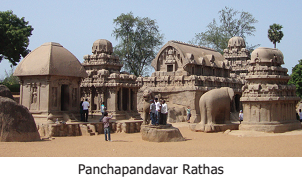
The most important among the Mamalla style of architecture is the open art gallery. Several miniature sculptures such as the figure of a lice-picking monkey, elephants of huge size and the figure of the ascetic cat have been sculpted beautifully on the wall of a huge rock. The fall of the river Ganga from the head of Lord Siva and Arjuna's penance are notable among them. The Great Penance panel is considered to be the world’s largest open-air bas relief.
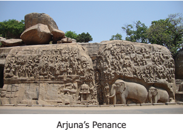
Narasimhavarma 2, also known as Rajasimha, constructed structural temples using stone blocks. The best example for the structural temple is Kailasanatha temple at Kanchipuram. This temple was built by using sand stones. Kailasanatha temple is called Rajasimheswaram.
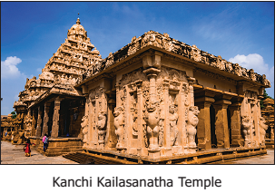
The last stage of the Pallava architecture is also represented by structural temples built by the later Pallavas. The best example is Vaikunda Perumal temple at Kanchipuram.
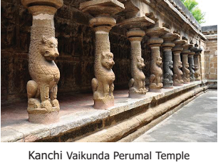
The Pallavas supported Jainism, Buddhism and the Vedic faith. They were great patrons of music, painting and literature. Some of the Pallava kings patronised the Alwars and Nayanmars. These exponents of Bhakti Cult preached a new form of Vaishnavism and Saivism. Among the Saivites were Appar and Manikkavasakar. Among the Vaishnavites were Nammazhvar and Andal. The Bhakti movement aimed at preaching a popular faith, in which prayers in Tamil were preferred to those in Sanskrit. Women were encouraged to participate in the religious congregations. The Tamil devotional cult was competitive with Buddhism and Jainism. Therefore, the latter suffered a gradual decline in most parts of Tamil country.
Gatika Within Bracket monastery or centre of learningat Kanchi was popular during the Pallava
times and it attracted students from all parts of India and abroad. Vatsyaya who wrote Nyaya Bhashya was a teacher at Kanchi Within Bracket Gatika otherwise known as educational institution.
The treatise on Dakshin Chitram Within Bracket Paintings of South India was compiled during the reign of Mahendravarma 1.
The great Sanskrit scholar, Dandin, adorned in the court of Narasimhavarman 1. Dandin composed Dashakumara Charita.
Bharavi, the great Sanskrit scholar, lived in the time of Simhavishnu. Bharavi wrote Kiratarjuniya, an epic in verse.
Tamil literature had also flourished during the Pallava rule. Thevaram composed by Nayanmars and Nalayradivyaprabandham composed by Azhwars, which are still chanted
by devout people. Perundevanar, who was patronized by Nandivarman 2, translated the Mahabharata into Tamil as Bharathavenba.
The Pallava kings had also patronised fine arts. The music inscriptions in Kudumiyanmalai and Thirumayam temples show Pallavas’ interest in music. The famous musician Rudracharya lived during Mahendravarman 1. The sculptures of this period depict many images in dancing postures
The Chalukyas ruled larger parts of west and centre of South India, consisting of Maratha country with Vatapi Within Bracket called as Badamias their capital. There were three distinct but closely related and independent Chalukya dynasties. They were
1. Chalukyas of Badami
2. Chalukyas of Vengi Within Bracket Eastern Chalukyas
3. Chalukyas of Kalyani Within Bracket Western Chalukyas.
These Chalukyas held Harsha in the north, the Pallavas in the south and Kalinga Within Bracket now a days called as Odishain the east.
Sources
Inscription |
Badami Cave Inscription of Mangalesha Kanchi Kailasanatha Temple Inscription Pattadakal Virupaksha Temple Inscription Aihole Inscription of Pulakesin 2 |
Foreign Notice |
Accounts of Chinese traveller Hiuen Tsang |
Box Item:
Aihole Inscription: It is found at Meguti Temple in Aihole Within Bracket Bagalkot district, Karnataka. It is written in Sanskrit by Ravikirti, a court poet of Chalukya king Pulakesin 2. It makes a mention of the defeat of Harsha Vardhana by Pulakesin 2.
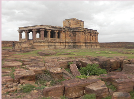
Pulakesin 1, a petty chieftain of Pattadakal in the Bijapur district, took and fortified the hill fort of Vatapi around 543 Anno Domini Within Bracket CommonEra. He soon conquered the territory between the Krishna and Tungabhadra rivers and the Western Ghats. His son Kirtivarman 1 Within Bracket c.from 566 to 597 brought the Konkan coast under Chalukya control. Pulakesin 2 Within Bracket c.from 610 to 642emerged as the most powerful ruler of the dynasty. The Persian Within Bracket Its located in Iranking Khusru 2 sent an embassy to the court of Pulakesin 2. Pulakesin succeeded in seizing parts of Gujarat and Malwa. He defied the North Indian ruler Harsha and according to an agreed understanding Narmada River was fixed as the boundary between the two. About 624, Pulakesin 2 conquered the kingdom of Vengi and gave it to his brother Vishnuvardhana, the first Eastern Chalukya ruler.
During from 641 to 647 the Pallavas ravaged the Deccan and captured Vatapi, but the Chalukyas had recaptured it by 655. Vikramaditya 1 Within Bracket From 655 to 680and Vikramaditya II, the successor of Vikramaditya 1 captured Kanchipuram but spared the city. Kirtivarman 2, the successor of Vikramaditya 2 was defeated by Dantidurga, the founder of the Rashtrakuta dynasty.
They were the descendants of Badami Chalukyas ruled from Kalyani Within Bracket modern day Basavakalyan. In 973, Tailapa 2, a feudatory of the Rashtrakuta ruling from Bijapur region defeated Parmara of Malwa. Tailapa 2 occupied Kalyani and his dynasty quickly grew into an empire under Somesvara 1. Somesvara 1 moved the capital from Manyakheta to Kalyani. For over a century, the two empires of southern India, the Western Chalukyas and the Chola dynasty of Thanjavur, fought many fierce battles to control the fertile region of Vengi. During the rule of Vikramaditya VI in the late Eleventh century, vast areas between the Narmada River in the north and Kaveri River in the south came under Chalukya control.
As supporters of both Saivism and Vaishnavism, the Chalukyas contributed richly to art and architecture. A new style of architecture known as Vesara was developed. Vesara is a combination of south IndianWithin Bracket Dravidaand north Indian Within Bracket Nagarabuilding styles. They perfected the art of stone building without mortar. They used soft sandstones in construction. They built a number of rock-cut cave-temples and structural temples dedicated to Siva, Vishnu and Brahma. The structural temples of Chalukyas exist at Aihole, Badami and Pattadakal. The important stone temples are the Vishnu temples at Badami and Aihole and the Virupaksha or Siva Temple at Pattadakal in Bijapur district in present-day Karnataka. The Vishnu temple at Badami was built by Mangalesa of the Chalukya Dynasty and contains the Aihole inscription of Vikramaditya 2. Their cave temples are found at Ajanta, Ellora and Nasik.
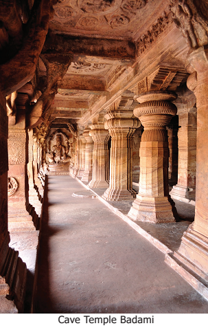
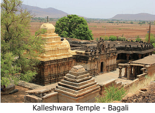
The cave temples at Badami contain five sculptures of Vishnu reclining on Sesha Nag; Varaha, the Boar; Narasimha or the lion-faced man; and Vamana, the dwarf. The Kasi Vishweshwara Temple at Lakkundi, the Mallikarjuna Temple at Kuruvatti, the Kalleshwara Temple at Bagali and the Mahadeva Temple at Itagi represent well known examples of the architecture of Western Chalukyas of Kalyani.
Chalukyas adopted the Vakataka style in paintings. Some of the frescoes of the caves of Ajantha were created during the reign of Chalukyas. The reception given to the Persian embassy by Pulakesin 2 is depicted in a painting at Ajanta.
Box ITEM:
Pattadakal Within Bracket United Nations Educational Scientific and Cultural Organization World Heritage Siteis a small village in Bagalkot district of Karnataka. It has ten temples. Out of them, four were built in northern style Within Bracket Nagara, while the rest six are in the southern Within Bracket Dravida style. Virupaksha Temple and Sangameshwara Temple are in Dravida Style and Papanatha temple is in Nagara style. The Virupaksha temple is built on the model of Kanchi Kailasanatha temple. Sculptors brought from Kanchi were employed in its construction.
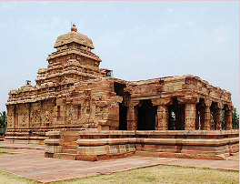
The Rashtrakutas ruled not only the Deccan but parts of the far south and the Ganges plain as well from Eighth to Tenth century Anno Domini Within Bracket Common Era. They were of Kannada origin and their mother tongue was Kannada. Dantidurga was the founder of the Rashtrakuta dynasty. He was an official of high rank under the Chalukyas of Badami. Krishna 1 succeeded Dantidurga. He consolidated and extended the Rashtrakuta power. He was a great patron of art and architecture. The Kailasanatha temple at Ellora was built by him.
The greatest king of the Rashtrakuta dynasty was Amogavarsha. He built a new capital at Manyakheta Within Bracket now Malkhed in Karnatakaand Broach became the port. Amoghavarsha Within Bracket c.from 814 to 878 was embraced to Jainism by Jinasena, a Jain monk. Krishna 2, who succeeded his father Amogavarsha, suffered a defeat in the battle of Vallala Within Bracket modern Thiruvallam, Vellore districtat the hands of Cholas under Parantaka in c. 916. Krishna 3Within Bracket c.from 939to 967 was the last able ruler of the Rashtrakuta dynasty. He defeated the Cholas in the battle of Takkolam Within Bracket presently in Vellore districtand captured Thanjavur. The Chalukyas under Krishna 3 contested with other ruling dynasties of north India for the control of Kanauj. He built Krishneshwara temple at Rameshwaram. Govinda 3 was the last ruler to hold the empire intact. After his death, the Rashtrakuta power declined.
Kannada language became more prominent. Kavirajamarga composed by Amogavarsha was the first poetic work in Kannada language. Court poets produced eminent works in Kannada. The three gems of Kannada literature during the period were Pampa, Sri Ponna and Ranna. Adikavi Pampa was famous for his creative works Adipurana and Vikramarjunavijaya. The life of Rishabadeva, the first Jain Tirthankara is depicted in Adipurana. In Vikramarjunavijaya Pampa’s patron, Chalukya Arikesari, is identified with Arjuna, epic hero of Mahabharatha.
The Rashtrakutas made significant contributions to Indian Art. The art and architecture of the Rashtrakutas can be found at Ellora and Elephanta.
Kailasanatha Temple was one of the 30 temples carved out of the hill at Ellora. It was built during the reign of Krishna 1. The temple is known for its architectural grandeur and sculptural splendour. The temple covers an area of over 60,000 square feet and vimanam Within Bracket like as temple tower rises to a height of 90 feet. This temple has resemblance to the shore temple at Mamallapuram. The Kailasanatha temple portrays typical Dravidian features.
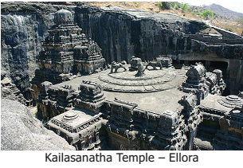
Originally known as Sripuri and called Gharapuri by the local people, Elephanta is an island near Mumbai. The Portuguese named it as Elephanta, after seeing the huge image of an elephant. The Trimurthi Within Bracket three-faced Siva icon is an illustrative of the sculptural beauty portrayed in the Cave Temple of Elephanta. There are impressive images of dwarapalakas Within Bracket entrance guards at the entrance of the Temple.
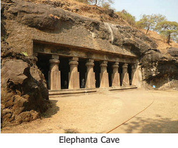
Rashtrakutas built temples in the complex of Pattadakal. The Jain Narayana temple and the Kasi Vishwesvara temple were built by Rashtrakutas.
PICTURE OF LESHAN GIANT BUDDHA 71 METRE TALL BUILT DURING TANG DYNASTY IN CHINA 713 AND 803 ANNO DOMINI
AND PICTURE OF BAGHDAD THE GREATEST CITY OF ISLAMIC EMPIRE OF EIGHTH TO TENTH CENTURIES ANNO DOMINI COMMON ERA ARE GIVEN
By the early Seventh century, South India had come under the control of Pallavas of Kanchi and Chalukyas of Badami.
Pallava period is known for its architectural splendour. Pallava architecture can be classified as rock-cut temples, structural temples. monolithic rathas and mandapams
The Chalukyas contributed richly to art and architecture. A new style of architecture known as Vesara style developed during their period
The Rashtrakutas also made significant contributions to Indian art. Their art and architecture can be found at Ellora cave and Elephanta island
feudatories being subject to a sovereign சிற்றரசர்கள்
ambassador envoy தூதுவர்
granite a very hard rock கருங்கல்
ravaged severely damaged சூறையாடிய
descendants offspring வழித்தோன்றல்கள்
reclining leaning back சாய்ந்திருக்ககூடிய
1. Choose the correct answer
1. Who among the following built the VaikundaPerumal temple?
a) Narasimhavarma 2
b) Nandivarma 2
c) Dantivarman
d) Parameshvaravarma
Answer: b) Nandivarma 2
2. Which of the following titles were the titles of Mahendra Varma 1?
a) Mattavilasa
b) Vichitra Chitta
c) Gunabara
d) all the three
Answer: d) all the three
3. Which of the following inscriptions describes the victories of Pulakesin 2?
a) Aihole
b) Saranath
c) Sanchi
d) Junagath
Answer: a) Aihole
2. Read the statement and tick the appropriate answer
1. Statement 1 : Pallava art shows transition from rock-cut monolithic structure to stone built temple.
Statement 2: Kailasanatha temple at Kanchipuram is an example of Pallava art and architecture.
a) Statement 1 is wrong.
b) Statement 2 is wrong.
c) Both the statements are correct
d) Both the statements are wrong.
Answer: c) Both the statements are correct
2. Consider the following statement(s) about Pallava Kingdom.
Statement 1: Tamil literature flourished under Pallava rule, with the rise in popularity of Thevaram composed by Appar.
Statement 2: Pallava King Mahendravarman was the author of the play Mattavilasa
Prahasana.
a) 1 only
b) 2 only
c) Both 1 and 2
d) Neither 1 nor 2
Answer: c) Both 1 and 2
3. Consider the following statements about the Rashtrakuta dynasty and find out which of the following statements are correct.
1. It was founded by Dantidurga.
2. Amogavarsha wrote Kavirajmarga.
3. Krishna I built the Kailasanatha temple at Ellora.
a) 1only
b) 2 and 3
c) 1 and 3
d) all the three
Answer: d) all the three
4. Which of the following is not a correct pair?
a) Ellora caves - Rashtrakutas
b) Mamallapuram - Narasimhavarma 1
c) Elephanta caves - Ashoka
d) Pattadakal - Chalukyas
Answer: c) Elephanta caves - Ashoka
5. Find out the wrong pair.
a) Dandin - Dasakumara Charitam
b) Vatsyaya - Bharathavenba
c) Bharavi - Kiratarjuneeyam
d) Amogavarsha - Kavirajamarga
Answer: b) Vatsyaya - Bharathavenba
3. Fill in the blanks
1.Dash defeated Harsha Vardhana on the banks of the river Narmada.
Answer: Pulikesin 2
2.Dash destroyed Vatapi and assumed the title VatapiKondan.
Answer: Narasimha varama
3.Dash was the author of Aihole Inscription.
Answer: Ravikirti
4.Dash was the army general of Narasimhavarma 1
Answer: Paranjothi
5.The music inscriptions in Dash and Dash show Pallavas’ interest in music.
Answer: Kudumianmalai, thirumayam
4. Match the following.
1.Pallavas - Kalyani
2.Eastern Chalukyas - Manyakheta
3.Western Chalukyas - Kanchi
4.Rashtrakutas - Vengi
Answer:
1.Pallavas - Kanchi
2.Eastern Chalukyas - Vengi
3.Western Chalukyas - Kalyani
4.Rashtrakutas - Manyakheta
5. State True or False
1. The famous musician Rudracharya lived during Mahendravarma 1.
Answer: True
2.The greatest king of the Rashtrakuta dynasty was Pulakesin 2.
Answer: False
3. Mamallapuram is one of the United Nations Educational Scientific and Cultural Organization World Heritage Sites.
Answer:True
4.Thevaram was composed by Alwars.
Answer: False
5. The Virupaksha temple was built on the model of Kanchi Kailasanatha Temple.
Answer: False
6. Answer in one or two sentences
1. Name the three gems of Kannada literature.
2. How can we classify the Pallava architecture?
3. What do you know of Gatika?
4. Panchapandavar rathas are monolithic rathas. Explain.
5. Make a note on the Battle of Takkolam.
7. Answer the following
1. Examine Pallavas’ contributions to architecture.
2. Write a note on Elephanta island and Kailasanatha temple at Ellora.
8. Higher Order Thinking
1. Give an account on Western Chalukyas of Kalyani.
9. Life Skills
1 Collect temple architecture pictures of Pallavas, Chalukyas and Rashtrakutas and identify the distinguishing features of each period.
2. Field Trip: Plan a trip to any place of historical importance.
10. Activities
1. Sketch the biography of Mahendravarma 1 and Pulakesin 2 .
2.See the picture and write a few sentences on it.
11. Answer Grid
Give examples for the structural temples of Pallava Period.
Answer: Kailasanatha Temple, Perumal Temple |
Name the new style of architecture developed during the Chalukya period.
Answer: Vesara
|
What does Aihole inscription mention?
Answer: Defeat of Harsha vardhana by pulakesan 2 |
Who built the Kailasanatha temple at Ellora? Answer: Krishna 1 |
Name the sculptural mandapas of Mamallan style of architecture. Answer:Monolithic |
Where do structural temples of Chalukya exist? Answer: Aihole, Badami, Pattadakal |
Name two Saivite saints and Vaishnavite saints who practised bhakti cult during Pallava period? Answer: Manikkavasakar, Nammazhvar,Andal
|
Who was the founder of Rashtrakuta dynasty? Answer: Danthidurga |
What were the titles adopted by Narasimha Varma 1? Answer: Mamallan, Vatapi kondan |
ICT CORNER
South Indian Kingdoms
This activity for Interactivity Map is a United Nations Educational Scientific and Cultural Organization World Heritage Sites.
World Heritage Sites helps to know
learn about ancient Heritage Sites
Steps: Step 1: Open the Browser and type the URL given below Within Bracket orScan the Quick Response Code.
Step 2: World Heritage Centre page will appear on the screen.
Step 3: Double click or Zoom any tagged sites or places. Within Bracket example. Mamallapuram
Step 4: You can see collective pictures, videos and more details.
Browse in the link Web: http://www.elections.in/
Within Bracket orscan the Quick ResponseCode
To understand the location, extent and political divisions of the continents of Asia and Europe
To know about the physical features and drainage of these two continents.
To understand the climate and natural vegetation of these continents.
To discuss the economic activities and resources.
To appraise the cultural mosaic of both the continents.
To gain the skill of locating the given places on the map.
Students: Good morning, Teacher.
Teacher: Good morning, students! Did you celebrate the English New Year well?
Students: Yes madam.
Teacher: Ok. English is the native of which country?
Students: Britain.
Teacher: Good. Do you know which continent is it located in?
Students: Europe.
Teacher: Very good. Which is our home continent?
Students: Asia.
Teacher: Exactly. In the first term, you have learnt about how many continents are in the world and their names. In this lesson, we are going to learn in detail about Asia and Europe. Let us explore these two continents.
This lesson discusses the location, boundaries, physical and political divisions of Asia and Europe. The major rivers, climate and natural vegetation are highlighted in this lesson. It also explains abouthow economic activities are determined by the resources.
The cultural mosaics of Asia and Europe are great eye openers for learners in terms of European and Asian cultures.